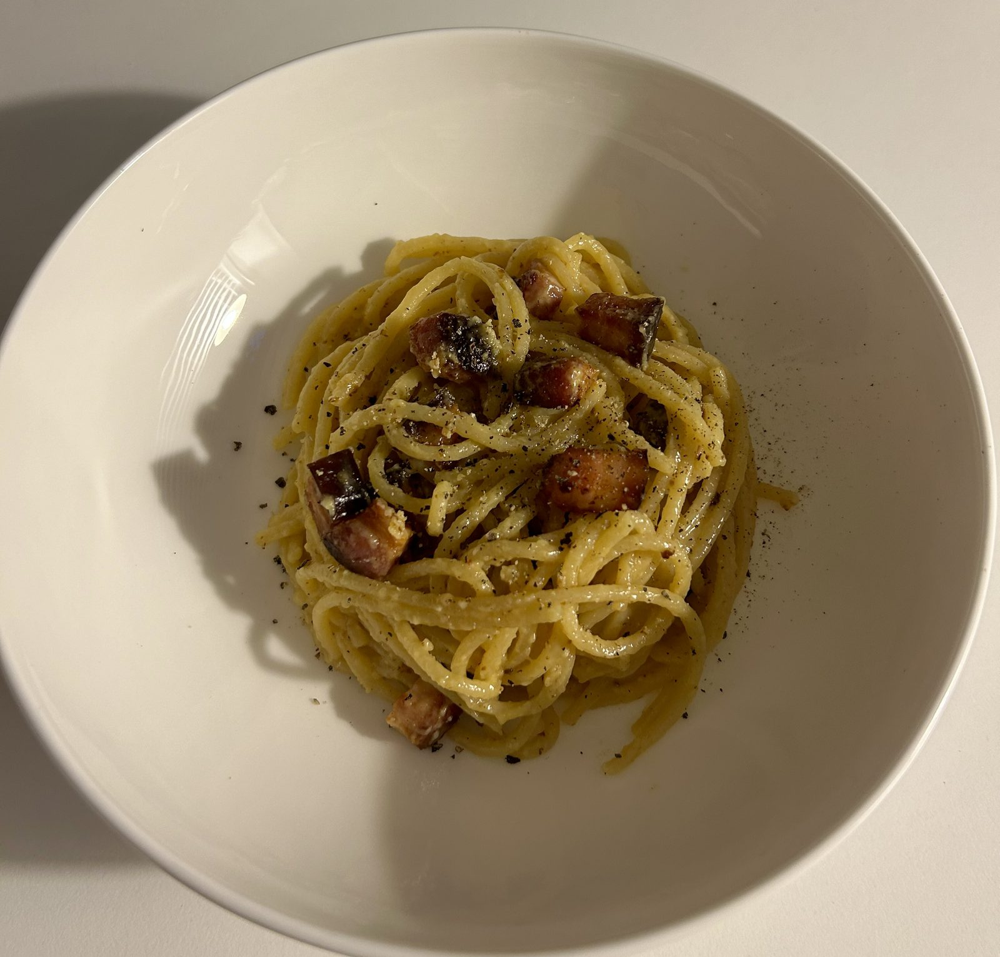

Real Roman carbonara — no cream, ever. Just guanciale, egg yolks, Pecorino Romano and a generous amount of black pepper, emulsified into a sauce that clings to every strand.
The whole thing comes together in under 30 minutes, which makes it a great one for date night when you want something that feels special without spending all evening on it.
The only trick is timing: get the pan off the heat before the eggs go in, or you'll end up with scrambled egg spaghetti instead of a silky sauce.

2 servings
20–25 mins • High Protein • Base: 2 servings
Eggs and Pecorino bring a solid hit of protein and calcium, while guanciale adds richness in small quantities — this is a treat-yourself plate rather than an everyday one, best kept for when you want something a bit special.